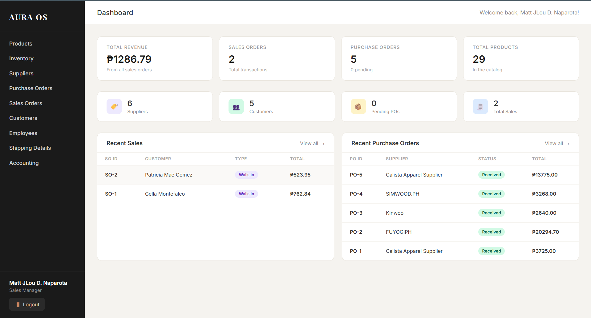

Business Analytics is the practice of iterative, methodical exploration of an organization's data, with an emphasis on statistical analysis. It is used by companies committed to data-driven decision making to gain insights that inform strategic and tactical business decisions.
Analytics is the systematic computational analysis of data or statistics. It involves discovering, interpreting, and communicating meaningful patterns in data, as well as applying data patterns toward effective decision making.
Business encompasses all activities involved in running a company or organization. It includes strategy, operations, finance, marketing, and management - all areas where analytics provides crucial insights for improvement and growth.
Analytics removes guesswork from business decisions, providing concrete evidence and insights to guide strategic planning and operational improvements.
Organizations leveraging analytics gain deeper market insights, identify opportunities faster, and respond to changes more effectively than competitors.
Analytics identifies inefficiencies, reduces waste, and optimizes resource allocation, leading to significant cost savings and improved profitability.
Advanced analytics enables forecasting trends, customer behavior, and market dynamics, allowing proactive rather than reactive business strategies.
Analytics reveals deep customer insights, preferences, and behaviors, enabling personalized experiences and stronger customer relationships.
Data analytics uncovers new opportunities, market gaps, and potential innovations that drive business growth and transformation.
Proficiency in programming languages (Python, R, SQL), statistical methods, and data visualization tools. Strong mathematical foundation and continuous learning mindset.
Deep understanding of business processes, industry knowledge, and strategic thinking. Ability to translate data insights into actionable business recommendations.
Exceptional ability to present complex findings clearly, create compelling visualizations, and tell stories with data. Bridges technical and non-technical stakeholders.
Critical thinking, curiosity, and creativity in approaching challenges. Ability to break down complex problems and design innovative analytical solutions.
The field of business analytics offers diverse and rewarding career paths across industries
(Data Wiz)
Collect, process, and perform statistical analyses on large datasets. Create reports and visualizations to help stakeholders make informed decisions.
(BI Wiz)
Design and develop BI solutions, dashboards, and reporting systems. Transform raw data into actionable business insights.
(Data Sage)
Build predictive models and machine learning algorithms. Solve complex business problems using advanced statistical techniques.
(Insight Advisor)
Advise organizations on analytics strategy and implementation. Deliver data-driven solutions to client challenges across industries.
(Market Tracker)
Analyze marketing campaigns, customer behavior, and market trends. Optimize marketing ROI through data-driven strategies.
(Money Mapper)
Evaluate financial data, create forecasting models, and provide investment recommendations. Support strategic financial planning.
(Ops Strategist)
Optimize business processes and supply chains. Use analytics to improve efficiency and reduce operational costs.
(Product Decoder)
Analyze product performance and user behavior. Drive product development and feature prioritization with data insights.
Explore our activities, projects, and the exciting world of business analytics
